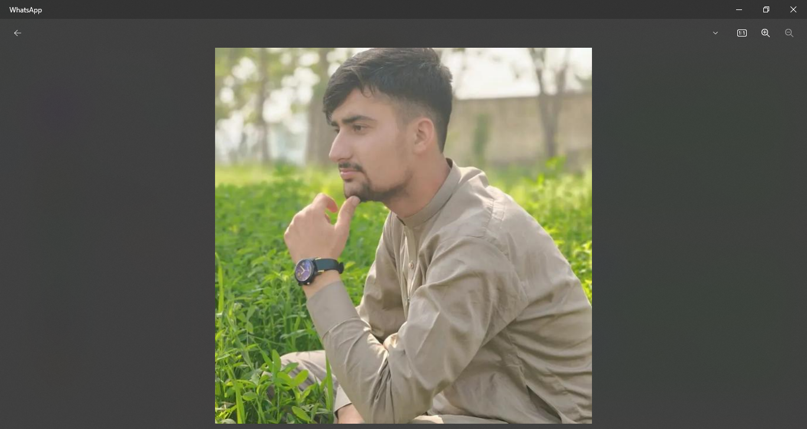

Welcome To My Website
My Name Is Waqas Khan
I Am A Web Develper
God Gifted Qualities:
Empathy
Creativity
Resilience
Intuition
Compassion

My Mission:
Education and Skill Development
Strategic Goals
Networking
Persistence and Adaptability
Philanthropy and Social Impact
Building a Strong Brand
Innovative Thinking
About Me
Contact Us